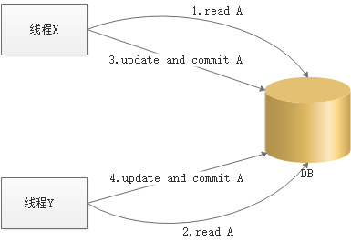
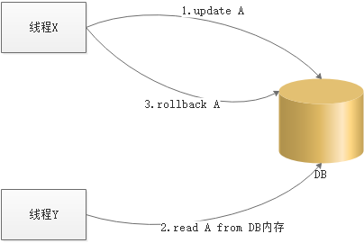
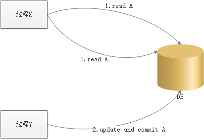
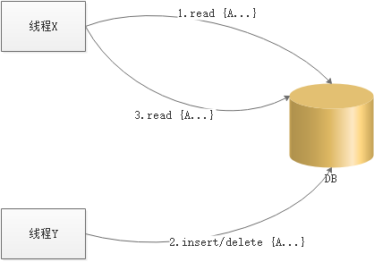
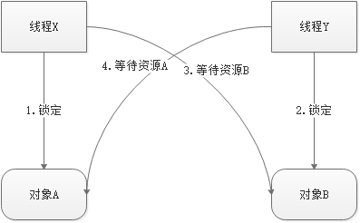
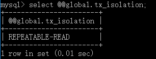
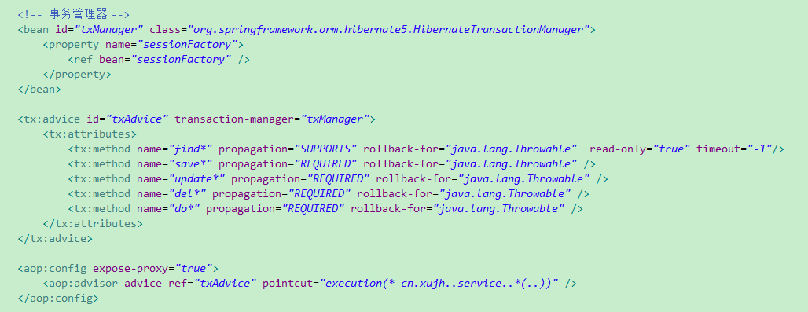
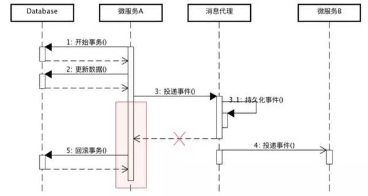
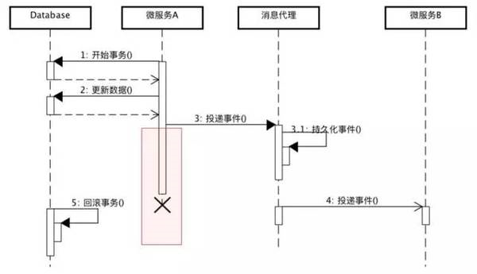
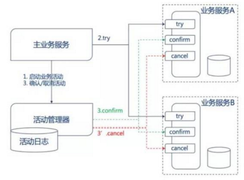

这是同事在分享会上整理的资料，收获颇丰。
事务管理
几乎所有的Web项目中都会涉及数据库，那么当多个客户行为同时操作到了一条或一批数据时，就有可能因这种并发操作导致他们之间相互产生影响而导致错误的结果。本文将详细介绍这些问题产生的过程以及如何解决这些问题。
共享资源与并发
什么是共享资源？
共享资源指的是可以被多个任务同时使用的资源，在本文中，我们的共享资源指的是数据库、表以及表中的记录。
当程序并发操作同一条或同一批记录时，可能会发生以下四种并发问题。
- 更新丢失（
Lost Update） - 脏读（
Dirty Reads） - 不可重复读（
Non-repeatable Reads） - 幻象读（
Phantom Reads）
更新丢失
如下图所示，程序X对记录A更新后又被程序Y覆盖，导致程序X的更新丢失，我们称这样的意外为更新丢失。

脏读
如下图所示，程序X先对记录A进行了更新后，程序Y从数据库内存中读取了更新的记录A，但接下来由于程序X发生了一些异常导致对记录A的更新被回滚了，因此记录Y读取的就是一条脏记录，我们称这种意外为脏读。

不可重复读
如下图所示，程序X先读取了记录A后，程序Y更新了A记录并进行了提交，由于业务需要程序X又再次从数据库中读取了A记录，按程序的设想两次读取的记录应该是一致的，但由于执行过程中程序Y的更新操作导致两次读取的信息不一致，我们称这种意外为不可重复读。

幻象读
如下图所示，程序X从表中批量读取了记录A后，程序Y对表中进行了insert或delete操作，由于业务需要程序X又再次从数据库中批量读取了A记录，按程序的设想两次读取的记录数量应该是一致的，但由于执行过程中程序Y的insert/delete操作导致两次读取的记录数量不一致，我们称这种意外为幻象读。

事务
什么是事务？
事务(Transaction)是访问并可能更新数据库中各种数据项的一个程序执行单元(unit)，通俗的说，事务就是由一到多条sql组成的一个不可分割的操作单元。
事务有哪些特性？
- 原子性（
Atomicity）
事务是不可拆分的执行单元，要么都执行，要么都不执行。 - 一致性（
Consistency）
事务执行的结果必须是使数据库从一个一致性状态变到另一个一致性状态。因此当数据库只包含成功事务提交的结果时，就说数据库处于一致性状态。如果数据库系统 运行中发生故障，有些事务尚未完成就被迫中断，这些未完成事务对数据库所做的修改有一部分已写入物理数据库，这时数据库就处于一种不正确的状态，或者说是不一致的状态。 - 隔离性（
Isolation）
一个事务的执行不能其它事务干扰。即一个事务内部的操作及使用的数据对其它并发事务是隔离的，并发执行的各个事务之间不能互相干扰。 - 持久性（
Durability）
事务一旦提交，它对数据库中的数据的改变就应该是永久性的。接下来的其它操作或故障不应该对其执行结果有任何影响。
衡量并发事务正确执行的标准是什么？
可串行性，即并发执行的事务与多个事务的某个串行执行的结果一致，我们称此为并发事务的可串行性，这是衡量并发事务是否正确执行的唯一标准。
事务管理
排它锁与共享锁
事务的可串行性需要排它锁和共享锁提供保障：
- 排它锁(
eXclusive lock,简记为X锁)
排它锁又称为写锁，若事务T对数据对象A加上X锁，则只允许T读取和修改A，其它任何事务都不能再对A加任何类型的锁，直到T释放A上的锁。 - 共享锁（
Share lock,简记为S锁）
共享锁又称为读锁，若事务T对数据对象A加上S锁，则其它事务只能再对A加S锁，而不能加X锁，直到T释放A上的S锁。
事务一致性解决方案
悲观锁
修改数据前锁定记录，阻止其他线程访问。如果加锁失败，说明该记录正在被修改，那么当前查询可能要等待或者抛出异常。如果成功加锁，那么就可以对记录做修改，事务完成后就会解锁了。其间如果有其他对该记录做修改或加排他锁的操作，都会等待我们解锁或直接抛出异常。悲观锁主要用于以下两种环境：
- 资源竞争激烈的环境
- 发生并发冲突时采用回滚机制耗费的成本比用锁保护数据成本高的环境
乐观锁
事务在commit时进行检查，如果当前事务所处理的数据在事务begin到commit之间被其他事务修改过，那么就会就会产生一个错误，并对当前事务进行的操作进行rollback，否则进行commit操作。乐观锁主要用于以下两种环境：
- 资源竞争少的环境
- 不出现或者偶尔出现回滚事务的成本高于read数据时锁定数据的成本的环境
时标控制
事务在启动时设定一个时间戳，然后在每个操作执行前都进行验证：如果当前操作对应的资源的被其他事务进行最后一次read或write并commit的时间戳大于当前事务开始的时间戳，那么就放弃当前事务并进行rollback，然后再由客户重新启动事务。这就意味着，当前事务启动后，若被操作的资源被其他事务read或write并commit后就直接放弃再重新启动事务，直到新的时间戳能够满足条件。
锁协议
除了以上三种解决方案，还有一些协议可以在不同程度上为并发操作提供保障，主要有三阶段封锁协议与两段封锁协议。
- 三级封锁协议（也称为三级加锁协议）
- 一级封锁： 事务在修改资源前先为资源添加排它锁，直到事务结束时才释放此资源，此封锁可以解决更新丢失问题。
- 二级封锁： 在一级封锁的基础上，遇到事务读取资源的情况，那么在事务读取资源前添加共享锁，读完后立即释放资源，此封锁可以解决更新丢失和脏读问题。
- 三级封锁： 在一级封锁的基础上，遇到事务读取资源的情况，那么在事务读取资源前添加共享锁，知道事务结束后才释放资源，此封锁可以解决更新丢失、脏读、 不可重复读以及幻想读问题。
- 两段锁协议
此协议将事务分为两个阶段：- 第一阶段： 资源上锁阶段，对事务中所有涉及的资源在read/write之前进行上锁操作。
- 第二阶段： 资源释放阶段，一旦事务释放了第一个资源，那么当前事务此后将不再进行任何封锁操作，只进行解锁对资源进行释放的操作。如果并行执行的所有事务均遵守两段锁协议，那么他们的并行调度具有可串行性。
封锁后遗症
使用封锁技术可以从不同程度上解决事务的一致性问题，但封锁技术同时也会带来一些后遗症，主要有活锁和死锁。
什么是活锁？
事务T1封锁了对象A后，事务T2请求封锁对象A，于是T2进行等待，接着T3也请求封锁对象A，T3等待，当T1释放了A以后，系统如果先批准了T3对A的封锁请求，那么T2继续等待，接着可能有T4、T5…，如果系统一直未批T2的请求，那么T2就一直无法执行，这就造成了“活锁”。如何避免活锁？采用先来先服务策略。
什么是死锁？
如下图所示，线程X和线程Y都需要资源A和B，如果X先锁定了A，Y先锁定了B，那么X就会等待Y释放资源B，Y同时也在等待X释放A，这样就会无限等待下去而造成“死锁”。

如何解决死锁问题呢？
操作系统一般采用一次封锁所有资源的方式，但这样大大限制了并发，所以DBMS采用了诊断并解除死锁的方式，即每隔一个时间片段机会检测是否存在死锁，如果存在，那么就会选择撤销代价小的事务进行回滚，让撤销代价大的事务执行。
嵌套事务管理
锁的获取与释放规则：
- 规则1：如果子事务获取了某条数据的读锁，那么只有其父事务可以对该对象添加写锁；
- 规则2：如果子事务获取了某条数据的写锁，那么只有其父事务可以持有该写锁，以及添加读锁；
- 规则3：当子事务
commit时，它所有的锁由其父事务保留； - 规则4：当子事务放弃时，它所有的锁将被放弃，如果其父事务已经获取了这些锁，那么它可以继续保留；
并行调度规则：
- 规则1：父事务不允许和子事务并发运行；
- 规则2：同层次的子事务可以并发运行；
commit和rollback规则：
- 规则1：子事务执行前会为父事务设定一个状态，如果子事务失败，那么所涉及到的父事务中的对象将被回滚到设定的状态；
- 规则2：子事务是父事务的一部分，只有当顶级的事务
commit时，所有的子事务才会commit，如果父事务rollback，那么所有的子孙事务也会rollback。
数据库隔离级别
数据库隔离级别:数据库设定满足项目需求的隔离级别，设置的隔离级别越高，数据出现不一致性的可能越小，但这同时也会降低数据库并发访问的数量而降低性能。
| 名称 | 避免覆盖更新 | 避免脏读 | 避免不可重复读 | 避免幻读 | 备注 |
|---|---|---|---|---|---|
Read uncommitted (读未提交) |
√ | × | × | × | |
Read committed (读已提交) |
√ | √ | × | × | Oracle默认级别 |
Repeatable read (可重复读) |
√ | √ | √ | × | MySql默认级别 |
Serializable (串行化) |
√ | √ | √ | √ |
MySql隔离级别操作示例：
- 操作一：查看当前会话隔离级别
select @@tx_isolation; - 操作二：查看系统当前隔离级别
select @@global.tx_isolation; - 操作三：设置当前会话隔离级别
set session transaction isolatin level repeatable read; - 操作四：设置系统当前隔离级别
set global transaction isolation level repeatable read;
在MySql中查询出的默认隔离级别：

Web项目事务管理
本小节将介绍事务在项目中的实际应用，并且只说明了一些经常使用的场景。
Spring + Hibernate声明式事务

上图是spring-hibernate声明式事务管理声明式事务指的是在配置文件中声明。用在Spring配置文件中声明式的处理事务来代替代码式的处理事务。这样的好处是，事务管理不侵入开发的组件，具体来说，业务逻辑对象就不会意识到正在事务管理之中，事实上也应该如此，因为事务管理是属于系统层面的服务，而不是业务逻辑的一部分，如果想要改变事务管理策划的话，也只需要在定义文件中重新配置即可；在不需要事务管理的时候，只要在设定文件上修改一下，即可移去事务管理服务，无需改变代码重新编译，这样维护起来极其方便，因此这也是我们项目中的第一选择。Spring使用AOP来完成声明式的事务管理，因而声明式事务是以方法为单位，Spring的事务属性自然就在于描述事务应用至方法上的策略，在Spring中事务属性有以下参数:
name，方法名称，可以使用方法全名，也可以使用Spring的表达式，我们一般使用spring表达式来对方法进行匹配，因此我们的方法命名也必须符合要求才能启动事务管理。propagation，事务传播行为，Hibernate设定了7种事务传播行为，如下表所示：PROPAGATION_REQUIRED:对应配置中的REQUIRED，如果当前没有事务，就新建一个事务，如果已经存在一个事务中，加入到这个事务中,这是最常见的选择PROPAGATION_SUPPORTS:对应配置中的SUPPORTS，支持当前事务，如果当前没有事务，就以非事务方式执行PROPAGATION_MANDATORY:对应配置中的MANDATORY，使用当前的事务，如果当前没有事务，就抛出异常PROPAGATION_REQUIRES_NEW:应配置中的REQUIRES_NEW，新建事务，如果当前存在事务，把当前事务挂起PROPAGATION_NOT_SUPPORTED:对应配置中的NOT_SUPPORTED，以非事务方式执行操作，如果当前存在事务，就把当前事务挂起PROPAGATION_NEVER:对应配置中的NEVER，以非事务方式执行，如果当前存在事务，则抛出异常PROPAGATION_NESTED:对应配置中的NESTED，如果当前存在事务，则在嵌套事务内执行。如果当前没有事务，则执行与PROPAGATION_REQUIRED类 似的操作
isolation，事务隔离级别，对应到数据库隔离级别，此参数为非强制选项，默认值为DEFAULT，即根据系统选用的数据库自动使用数据库默认的事务隔离级别，例如MySql自动使用REPEATABLE_READ。DEFAULT:数据库默认级别READ_UNCOMMITTED:读未提交READ_COMMITTED:读已提交REPEATABLE_READ:可重复读SERIALIZABLE:串行化
readonly，用于设定当前事务是否只读事务，此参数为非强制选项，它默认为false，如果确定为只读事务，那么可以设定为true。timeout，用于设定事务超时时间（单位：秒），此参数为非强制选项，它的默认值为-1，表示没有时间限制，如果系统对时间要求比较明确，那么可以设定一个固定值。rollback-for，用于设定与到哪些异常时进行事务回滚操作，我们的项目中遇到所有类型的异常都将回滚，所以我们配置的是rollback-for="java.lang.Throwable"。no-rollback-for，与rollback-for对应的还有no-rollback-for,此参数可以从rollback-for范围内排除不需要进行回滚的异常。Spring + Hibernate 注解式事务
除了声明式事务管理，
spring也为我们提供了注解式事务管理，我们可以在类以及方法上使用注解来管理事务。例如：public class TestServiceBean implements TestService { private TestDao dao; public void setDao(TestDao dao) { this.dao = dao; } (propagation = Propagation.NOT_SUPPORTED) public List getAll() { return null; } }@Transactional可以配置在类或方法上，如果类和方法上都配置了，那么方法中的配置会覆盖类的全局配置，此注解的参数与声明式配置中的参数基本一致，这里不再做详细说明。Hibernate锁模式
Hibernate的悲观锁机制完全依赖JDBC连接或JTA资源实现，Hibernate不能在Session缓存中加任何锁，只能为JDBC连接设置隔离级别。但乐观锁就要灵活的多，除了可以通过声明式事务管理和注解式事务管理外，我们还可以在代码中控制锁的细节。这主要通过Hibernate中的LockMode来控制。
| 模式 | 可用 | 说明 |
|---|---|---|
NONE |
× | 无锁机制，Hibernate默认采用此模式，仅供Hibernate内部使用 |
WRITE |
× | 在 Insert 和 Update 记录的时候会自动获取，仅供Hibernate内部使用 |
READ |
× | 在读取记录的时候会自动获取，仅供Hibernate内部使用 |
FORCE |
× | @Deprecated，被PESSIMISTIC_FORCE_INCREMENT替代 |
PESSIMISTIC_FORCE_INCREMENT |
√ | 强制更新数据库中对象的版本属性,即表明当前事务已经更新了这个对象（事务尚未提交） |
UPGRADE |
× | @Deprecated，被PESSIMISTIC_WRITE替代 |
PESSIMISTIC_READ |
√ | 悲观锁，即利用数据库的for update字句加锁，事务开始即获得数据库的锁。 |
PESSIMISTIC_WRITE |
√ | 悲观锁，即利用数据库的for update字句加锁，事务开始即获得数据库的锁。 |
PESSIMISTIC_FORCE_INCREMENT |
√ | 悲观锁，且强制更新版本属性 |
OPTIMISTIC |
√ | 乐观锁 |
OPTIMISTIC_FORCE_INCREMENT |
√ | 乐观锁，且强制更新版本属性 |
UPGRADE_NOWAIT |
√ | Oracle 的特定实现，利用 Oracle 的 for update nowait 子句实现加锁 |
UPGRADE_SKIPLOCKED |
√ | Oracle应用的查询请求使用SELECT ... for update skip |
版本属性，即通过@Version来标记的属性，JPA通过实体类中使用@Version注解来发现数据库记录的并发操作，当有个记录更新了（事务尚未提交）该记录时就表明此记录已经被更新，其他并发操作试图操作此记录时就抛出异常OptimisticLockException。Hibernate中可以在Query.setLockMode、Session.lock、Session.get、Session.find以及Criteria.setLockMode等操作中设定锁模式。另外需要注意的是，需要与LockModeType进行区分，LockModeType也有类似的功能，但仅用于java持久化查询语言（JPQL）或Criteria API查询，否则会抛异常。
分布式事务管理
分布式
分布式系统是指软件被拆分成多个组件，并分布在不同的网算机上，彼此之间仅仅通过消息传递进行通信和协调的系统。
常见的分布式方案有以下几种：
- 分布式存储
大型网站常常需要处理海量数据，单台计算机往往无法提供足够的内存空间，可以对这些数据进行分布式存储。 - 分布式服务
将应用和服务进行分层和分割，然后将应用和服务模块进行分布式部署。这样做不仅可以提高并发访问能力、减少数据库连接和资源消耗，还能使不同应用复用共同的服务，使业务易于扩展。 - 分布式静态资源
对网站的静态资源如JS、CSS、图片等资源进行分布式部署可以减轻应用服务器的负载压力，提高访问速度。 - 分布式计算
随着计算技术的发展，有些应用需要非常巨大的计算能力才能完成，如果采用集中式计算，需要耗费相当长的时间来完成。分布式计算将该应用分解成许多小的部分，分配给多台计算机进行处理。这样可以节约整体计算时间，大大提高计算效率。
和集中式系统相比，分布式系统的性价比更高、处理能力更强、可靠性更高、也有很好的扩展性。但是，分布式在解决了网站的高并发问题的同时也带来了一些其他问题，其中分布式存储和服务带来的数据一致性就是其中典型的一个问题。在介绍分布式的数据一致性之前，需先向大家介绍下远程通信方式和语义以及幂等性的概念。
远程通信方式:
- 远程过程调用:
Remote Procedure Call，简称RPC，例如，我们使用cxf、dubbo等框架采用的就是此通信方式 - 远程方法调用:
Remote Method Invocation，简称RMI，这是java平台特有的一种通信方式，使用的较少 - 消息队列调用:
Message Queue,简称MQ，此方式常使用RabbitMQ、ActiveMQ、ZeroMQ等消息中间件进行消息的传递与应答，避免生产者与消费者直接接触，此方式可以避免消息丢失，同时可以对系统某时间段访问请求过多起缓冲作用
远程通信语义:
| 名称 | 定义 | 备注 |
|---|---|---|
| 或许 | 远程方法可能执行一次，也可能不执行 | 消息丢失或服务崩溃 |
| 最少一次 | 调用者知道最少调用了一次或者未接受到执行结果（接受到异常） | 重复调用幂等性的服务或服务异常 |
| 最多一次 | 调用者知道最多调用了一次或者未接受到执行结果（接受到异常） | 有效防止因非幂等性而导致的随机故障 |
分布式通信根据自己的需要可以选择不同的语义，下表根据分布式对请求重发、过滤、重新执行以及应答等问题给出了通信语义的方案。
| 名称 | 请求重发 | 过滤重复请求 | 重新执行或重传应答 |
|---|---|---|---|
| 或许 | 否 | 不适用 | 不适用 |
| 最少一次 | 是 | 否 | 重新执行 |
| 最多一次 | 是 | 是 | 重传应答 |
什么是方法的幂等性？
方法的幂等性指的是此方法任意多次执行所产生的影响均与一次执行的影响相同。
保证分布式服务的幂等性是分布式架构中的一个重要指标。有些方法本身就具有幂等性,例如，将订单更新为待支付状态。更多的方法是不具有幂等性的，例如，订单支付方法。假设系统有订单服务和支付服务，付款时，订单服务就需要调用支付服务的支付方法，如果订单服务发送支付请求成功，支付服务也如预期的那样支付完成了，但支付服务在向订单服务反馈时出现了网络故障，导致订单服务支付出现异常，此时如果系统有重复调用的机制，那么就需要确保再次调用支付服务是不会出现重复支付的情况，因此我们就需要通过其他方式来确保此支付方法具有幂等性效果（伪幂等性）。
通过完成以下工作就可以让非幂等性方法具有幂等性效果：
- 构建一个全局的服务不重复请求序号生成器
- 跨服务请求前要生成一个请求序号并传递给被请求的服务
- 非幂等性的服务方法在执行成功后保存执行结果
- 重复访问服务时需带上第一次访问时生成的请求序号
- 服务被访问时，通过请求序号验证是否已访问并有执行结果，如果是，那么直接返回执行结果，否则执行业务、保存执行结果并返回
可靠事件模式
此模式属于事件驱动架构，当某件重要事情发生时，例如创建订单，微服务会向消息代理发布一个订单支付事件。消息代理会向订阅事件的微服务推送事件，当订阅这些事件的微服务接收此事件时，就可以完成自己的业务，同时此业务也可能会发布其他的事件。
可靠事件模式在于保证可靠事件投递和避免重复消费，可靠事件投递需要保证每个服务原子性的业务操作和发布事件，以及确保事件传递至少一次。这些我们需要借助消息代理（Message Broker）来完成，现在一些流行MQ，例如ActiveMQ、RabbitMQ等都支持消息的持久化，以及最少一次语义模式。避免重复消费则需要确保服务的幂等性。
public void trans(){
try{
//1、操作数据库
boolean result = dao.update(model);//操作数据库失败会抛出异常
//2、如果第一步成功，则投递消息。
if (result) {
mq.append(model);//如果投递消息失败，方法会抛出异常
}
} catch(Exception ex) {
rollback();//异常回滚
}
}
根据上述代码及注释，初看可能出现 3 种情况:
- 操作数据库成功，向消息代理投递事件也成功。
- 操作数据库失败，不会向消息代理中投递事件了。
- 操作数据库成功，但是向消息代理中投递事件时失败，向外抛出了异常，刚刚执行的更新数据库的操作将被回滚。
从上面分析的几种情况来看，貌似没有问题。但是仔细分析不难发现缺陷所在，在上面的处理过程中存在一段隐患时间窗口。

服务 A 投递事件的时候可能消息代理已经处理成功，但是返回响应的时候网络异常，导致 append 操作抛出异常。最终结果是事件被投递，数据库却被回滚。

在投递完成后到数据库 commit 操作之间如果微服务 A 宕机也将造成数据库操作因为连接异常关闭而被回滚。最终结果还是事件被投递，数据库却被回滚。这个实现往往运行很长时间都没有出过问题，但是一旦出现了将会让人感觉莫名，很难发现问题所在。
下面给出两种可靠事件投递的实现方式。
本地事件表
本地事件表方法将事件和业务数据保存在同一个数据库中，使用一个额外的“事件恢复”服务来恢复事件，由本地事务保证更新业务和发布事件的原子性。考虑到事件恢复可能会有一定的延时，服务在完成本地事务后可立即向消息代理发布一个事件。
- 服务在同一个本地事务记录业务数据和事件
- 服务实施发布一个事件立即通知关联业务服务，如果事件发布成功立刻删除记录的事件
- 事件恢复服务定时从事件表中恢复未发布成功的事件，重新发布成功后删除记录的事件
本地事件表方式有比较明显的缺陷，例如会导致业务系统和事件系统耦合紧密，额外的事件操作也会给数据库带来压力。
外部事件表
外部事件表方法将事件持久化到外部的事件系统，事件系统需提供实时事件服务以接受微服务发布事件，同时事件系统还需要提供事件恢复服务来确认和恢复事件。
- 业务服务在事务提交前，通过实时事件服务向事件系统请求发送事件，事件系统只记录事件并不真正发送。
- 业务服务在提交后，通过实时事件服务向事件系统确认发送，事件得到确认后事件系统才真正发布事件到消息代理。
- 业务服务在业务回滚时，通过实时事件向事件系统取消事件。
- 如果业务服务在发送确认或取消之前停止服务了怎么办呢？事件系统的事件恢复服务会定期找到未确认发送的事件向业务服务查询状态，根据业务服务返回的状态决定事件是要发布还是取消。
该方式将业务系统和事件系统独立解耦，都可以独立伸缩。但是这种方式需要一次额外的发送操作，并且需要发布者提供额外的查询接口。
业务补偿模式
补偿模式使用一个额外的协调服务来协调各个需要保证一致性的服务，协调服务按顺序调用各个服务，如果某个服务调用异常（包括业务异常和技术异常）就通过执行与业务方法对应的补偿过程取消之前所有已经调用成功的服务。补偿模式建议仅用于不能避免出现业务异常的情况，如果有可能应该优化业务模式，以避免要求补偿事务。如账户余额不足的业务异常可通过预先冻结金额的方式避免，商品库存不足可要求商家准备额外的库存等。
对于一个通用的补偿框架来说，预先知道服务需要记录的业务要素是不可能的，因此我们就需要通过设计一些表来记录所有业务执行的流水。补偿过程作为一个服务调用过程同样存在调用不成功的情况，这个时候需要通过重试的机制来保证补偿的成功率。当然这也就要求补偿操作本身具备幂等性。
两阶段提交模式
Two Phrase Commit Protocol，简称2PC，翻译成中文即“两阶段提交协议”，这是处理分布式事务的最常见协议。
在此协议中，一个或多个资源管理器的活动均由一个称为事务管理器的应用组件来控制。此协议分为两个阶段：
- 投票阶段:
事务管理器给每个参与者(资源管理器)发送Prepare消息，参与者执行事务commit前的准备工作（例如，执行业务并将结果写如本地的redo和undo日志），根据自身的情况判断是否允许commit并向事务管理器发起投票。 - 提交阶段:
只要事务管理器在规定时间内未收到所有投票或者其中有一个反对票，那么它将给每个参与者发送回滚(Rollback)消息或者不发送让各参与者超时自动rollback，否则，它将发送提交(Commit)消息，参与者根据事务管理器的指令执行提交或者回滚操作，释放所有事务处理过程中使用的锁资源。
基于2PC，我们常见的有以下两种分布式事务处理方案，他们分别XA模式和TCC模式，其中XA模式用于解决分布式存储的数据一致性问题，TCC用于解决分布式服务的数据一致性问题。
XA模式（数据库2PC）
XA协议由Tuxedo首先提出的，并交给X/Open组织，作为资源管理器（数据库）与事务管理器的接口标准。目前，Oracle、Informix、DB2、Sybase和MySql等各大数据库厂家都提供对XA的支持。XA协议采用2PC的方式来管理分布式事务。XA接口提供资源管理器与事务管理器之间进行通信的标准接口。
JTA是Java Transaction API简称，即Java事务管理器规范，主要用于管理本地事务，如果想让JTA管理多台数据库操作的分布式事务，那么就需要XA支持。需要注意的是，Spring提供了JTA介入方式，但是没有提供JTA实现，JTA的实现由容器来完成，例如jboss、weblogic、websphere等,我们常用的tomcat并没有进行实现，但我们可以借助其插件jotm或atomikos实现JTA。
TCC模式（应用2PC）
TCC，全称Try-Comfirm-Cancle，它是基于应用层的2PC。一个完整的TCC有一个主业务服务和若干个从业务服务，TCC模式要求从业务服务提供三个接口：Try、Confirm和Cancle。
Try:完成所有的业务检查并预留必须的业务资源。Confirm:执行业务（不进行任何检查），且只使用Try阶段预留的业务资源，另外，Confirm操作需要满足幂等性(调用失败后，允许重新调用)。Cancle：释放Try阶段锁定的业务资源，Cancle操作需要满足幂等性(调用失败后，允许重新调用)。

TCC模式理论上可以很好的解决分布式数据一致性问题，但它也存以下几个问题：
- 如果某个服务请求被阻塞，那么所有的服务请求将被阻塞，当然，我们可以通过超时设置来避免此问题；
- 如果事务管理器出现故障，那么所有的分布式请求将无法执行；
- 一次远程请求需要多次与事务管理器进行通信，请求中涉及的服务越多，通信次数越多，因此高并发的系统中，与事务管理器的通信会从很大程度上影响系统性能，因此高并发系统选用此模式时需慎重；
无状态服务机制
服务不进行持久化，即服务方法执行完后返回数据，最终是否持久化由最原始的调用者或统一构建的持久化服务决定和操作。
如何选择解决方案
- 原则1：避免分布式事务
- 原则2：优先选择最终一致性方案，即可靠事件模式
- 原则3：最后选择两阶段提交法
- 原则4：如无必要，不要选择事务补偿机制